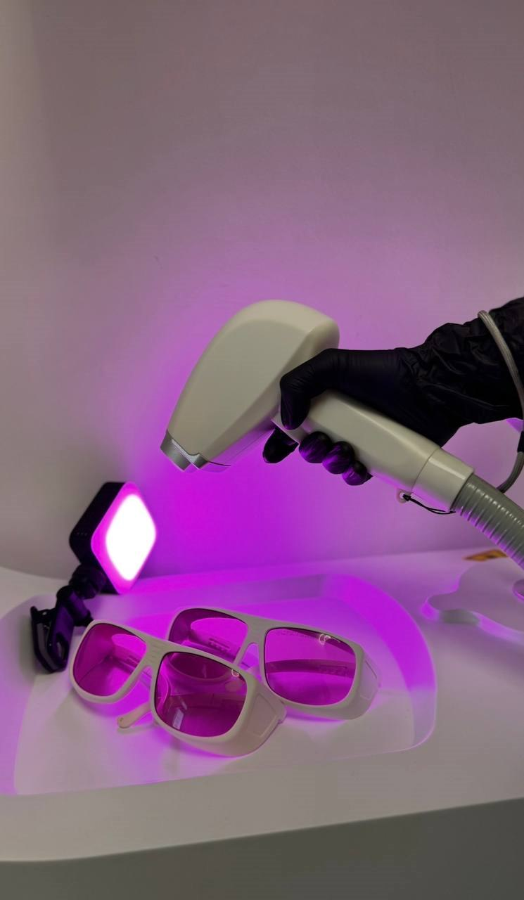
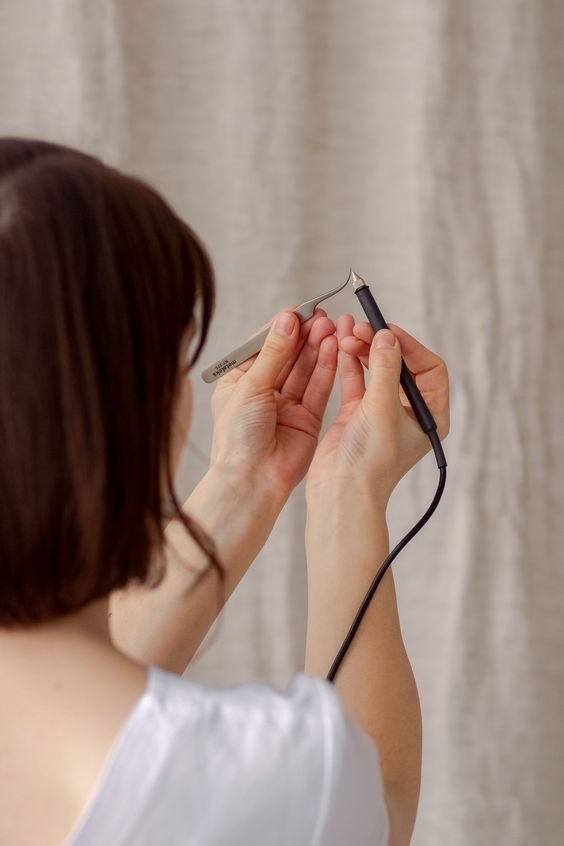
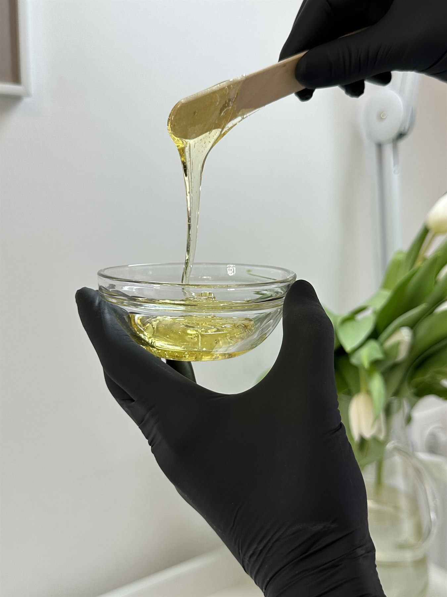
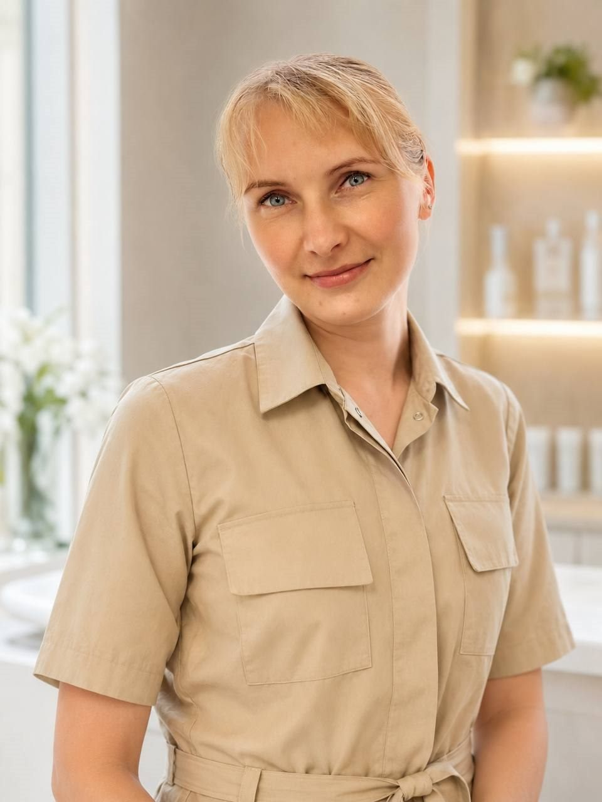
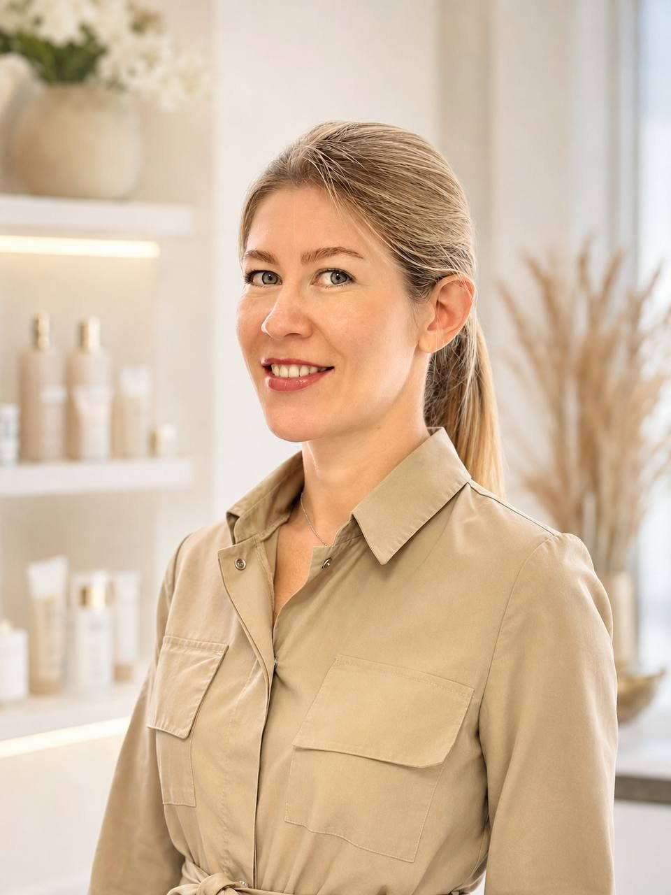
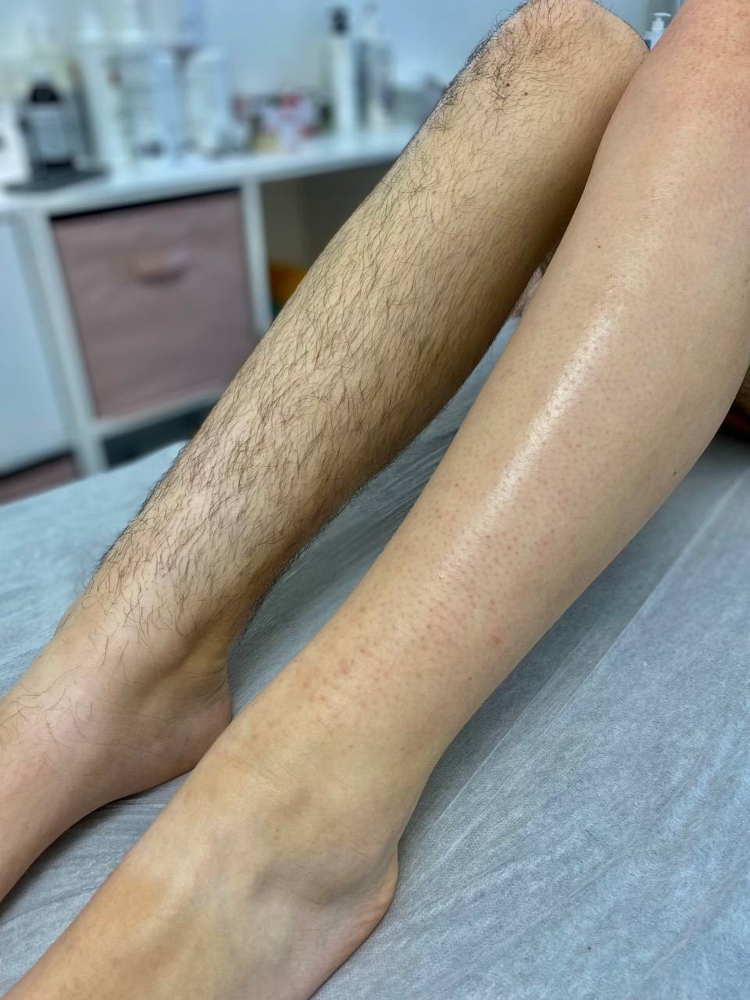
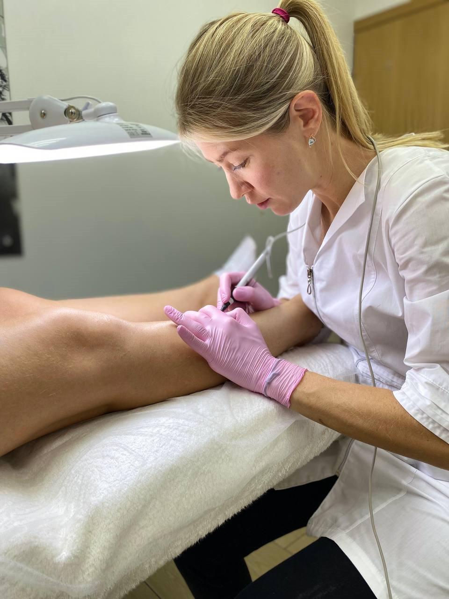
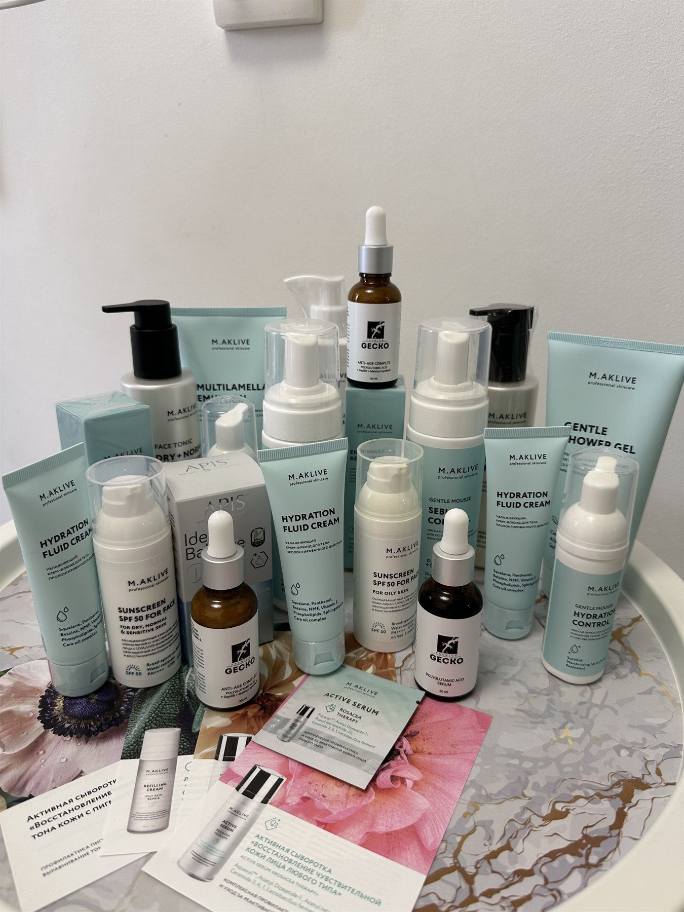

Не продлеваем курс ради выгоды
Мы не продаем бесконечные абонементы. Если лазер не подходит, честно предлагаем другой метод, а не продолжаем курс без результата.
Пермь • Парковый район
Подбираем способ гладкой кожи без раздражения, вросших волос и лишних процедур.
Подбираем способ гладкой кожи без раздражения и лишних процедур.
Манифест студии
Мы не продаем бесконечные абонементы. Если лазер не подходит, честно предлагаем другой метод, а не продолжаем курс без результата.
Лазер, электроэпиляция и депиляция решают разные задачи. Мастер подбирает схему под цвет волос, кожу, зону и вашу цель.
Помогаем при раздражении, вросших волосах и чувствительной коже. Подбираем домашний уход, который поддерживает результат после визита.
Вы заранее понимаете, что будет происходить, сколько времени займет визит и какого эффекта ждать после первой процедуры.
Направления и технологии

Современный диодный лазер для комфортной работы с тёмными и русыми волосами. Мастер подбирает параметры под зону, чувствительность кожи и ваш предыдущий опыт эпиляции.

Единственный доказанный метод полного удаления волос навсегда. Безупречно работает с любым фототипом кожи, включая светлые, седые и жёсткие волосы.

Мгновенная гладкость за один визит без ожидания курса. Хороший выбор перед отпуском, событием или когда нужен понятный результат на 3-4 недели.
Гарантии сервиса
Все мастера имеют профильное образование и регулярную переаттестацию. Строго соблюдаем нормы СанПиН.
Удобное расположение студии. Бесплатная свободная парковка для наших клиентов прямо у входа.
Бесплатно предоставляем рекомендации и персонально подбираем домашний уход для здоровья вашей кожи.
Команда

Екатерина Климовских • мастер эпиляции
Подойдёт, если вы впервые идёте на эпиляцию, переживаете из-за боли или хотите спокойно разобраться в методах. Екатерина подробно объясняет каждый шаг, работает деликатно и помогает выбрать комфортный старт без навязывания курса.

Мария Грач • основатель студии / топ-мастер
Косметолог-эстетист с опытом более 18 лет. Подбирает долгосрочные программы ухода и комбинированные методы эпиляции.
Рейтинг 5.0 ★ 346 оценок в Dikidi Отзывы Марии Выбрать МариюРезультаты



Как выбрать метод
Чаще всего начинаем с лазера: быстро, комфортно, удобно для ног, подмышек, бикини, рук и спины.
Здесь лучше работает электроэпиляция: она точечно удаляет волоски, которые лазер может не видеть.
Подойдут шугаринг или воск: результат сразу после процедуры, без ожидания выпадения волос.
Начнём с консультации и щадящей зоны. Мастер объяснит ощущения заранее и подберёт комфортный вариант.
Для мужчин
Мужчины чаще приходят на спину, плечи, грудь, шею, линию бороды, уши и зону над губой. Подбираем метод под плотность волос, чувствительность кожи и цель: убрать лишнее полностью или поддерживать аккуратный контур.
Ближайшие окна
Точные свободные слоты смотрите в Dikidi. Ниже - быстрые сценарии записи для тех, кто хочет решить вопрос без переписки.
Прозрачный прайс
Здесь собраны основные цены на лазерную эпиляцию, электроэпиляцию, шугаринг и воск в студии на Парковом. Финальную схему мастер подберет по типу волос, зоне и чувствительности кожи.
Цены открыты до записи. Если услуга зависит от зоны или длительности, мастер заранее объяснит расчет и подберет формат без скрытых доплат.
Для первого визита в студию
Если вы у нас впервые, пройдите короткий тест за 1 минуту: мы учтём цвет волос, прошлый опыт и вашу цель, чтобы подсказать, с какого метода лучше начать — лазера, электроэпиляции или воска.
Вопрос 1 из 3
Вопрос 2 из 3
Вопрос 3 из 3
Анализируем ваш фототип…
Рекомендованный метод
Лазерная эпиляция
Можно сразу выбрать удобное время онлайн или оставить номер: наш мастер подскажет, с какого метода лучше начать именно в вашей ситуации.
Скидка по результату квиза действует только для новых клиентов студии и применяется при записи к Екатерине.
Частые вопросы
Коротко отвечаем на вопросы, которые чаще всего возникают перед первым визитом. Точный метод, интервалы и ограничения мастер уточнит индивидуально.
Лазер заметно уменьшает количество волос и замедляет рост. Электроэпиляция разрушает обработанный фолликул, поэтому подходит для стойкого результата. Шугаринг и воск дают временную гладкость: волосы отрастают, но при регулярных процедурах часто становятся тоньше и реже.
После лазера волосы обычно начинают выпадать через 1-2 недели, выраженное прореживание видно после нескольких сеансов. Электроэпиляция работает постепенно: результат накапливается от процедуры к процедуре. После воска и шугаринга гладкость видна сразу и держится в среднем 3-4 недели.
Ощущения зависят от метода, зоны и чувствительности кожи. Лазер чаще воспринимается как тепло или лёгкое пощипывание. Электроэпиляция ощущается точечно, как короткий укол в каждый волосок. Воск и шугаринг дают резкое тянущее ощущение, которое быстро проходит.
Честный ответ: зависит от типа волос, зоны, кожи и гормонального фона. Для лазера часто нужен курс из нескольких процедур и поддерживающие визиты. Электроэпиляция обычно длится дольше, но работает точечно. После первого визита мастер даст прогноз именно по вашему случаю.
Для лазера волосы обычно сбривают за 24 часа до визита. Для электроэпиляции нужна длина 2-4 мм, поэтому зону не бреют несколько дней. Для воска и шугаринга волос должен быть не короче 3-5 мм. Если есть лекарства, загар или чувствительность кожи, лучше предупредить мастера заранее.
Да, все методы подходят мужчинам. Частые зоны: спина, плечи, грудь, шея, линия бороды, уши и зона над губой. Мастер подберёт метод под плотность волос, чувствительность кожи и желаемый результат.
Есть ограничения, которые важно обсудить до записи: воспаления или повреждения кожи в зоне, обострение кожных заболеваний, некоторые лекарства, загар, беременность, кардиостимулятор и отдельные системные состояния. Если сомневаетесь, напишите нам до визита — подскажем, можно ли записываться сейчас.
С подростками работаем только с согласия родителей и после консультации. Для воска и шугаринга возраст зависит от зоны и запроса. Лазер и электроэпиляцию для несовершеннолетних обсуждаем индивидуально, потому что гормональный фон ещё меняется.
Отзывы
Лучший мастер депиляции, у которого я была. Екатерина делает все быстро, аккуратно и очень бережно.
Отзыв на Dikidi
Сделал 5 процедур лазерной эпиляции, волос уже почти нет. Здорово. Благодарю мастеров этой студии.
Отзыв на Dikidi
Профессиональный и приветливый мастер. Услуга выполнена в уютной и комфортной атмосфере.
Отзыв на Dikidi
Личная консультация
С удовольствием проконсультируем: оставьте номер, и наш мастер поможет выбрать комфортный первый шаг — без навязывания курса и лишних процедур.
Как нас найти
Студия находится в Парковом районе Перми. Есть парковка. Онлайн-запись работает круглосуточно, процедуры проходят ежедневно с 09:00 до 21:00.